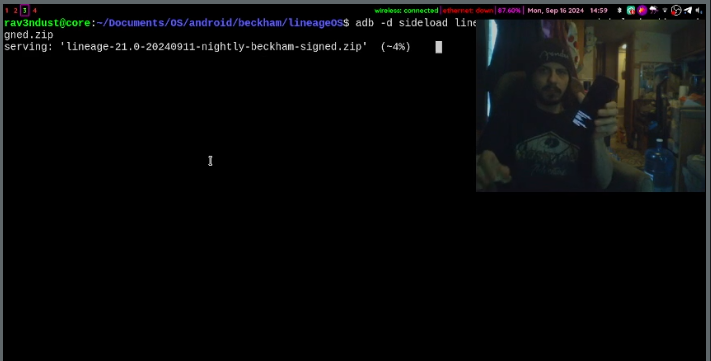

now | blog | wiki | recipes | bookmarks | contact | about | donate
* * * back home * * *
beckham is the codename of the Moto z3 play.
I have been using mine since 2019, running LineageOS. You can find some of the particularities of mine here.
Here are the specs of the device:
The moto z3 play has been a very consistent device over the last few years, a joy to use, and supported by lineageOS, which is a requirement for me when looking for devices I might want to purchase.
The Moto z3 play has very solid hardware, a taller device that is almost in "phablet" territory. A mostly edge-to-edge display, which I'm a big fan of, and something new to me when I first got the phone: a side-mounted fingerprint scanner, which I actually have grown to prefer.
The camera on this phone is quite good, definitely better than my other main device, my Essential PH-1. I notice this camera's weaknesses more when taking shots of things further away. However, for closer-up shots, this camera performs fairly well.I have taken some pretty good nature shots with it while out on walks that I think look pretty good.
The battery on the device is very solid. Keep in mind I am running LineageOS with no Google services, and that I barely use my phone, but it is able to get over 2 days before it needs to go on the charger again.
Also, one thing that I love about Moto phones, which is pretty minor in most respects, is this one singular thing - the ability to "chop" the phone twice in the air to turn the flashlight off and on. It's such a small thing, but I find myself trying to do it with other devices from several years of muscle memory from using this and other Moto devices.
There are "Moto Mods" for this and other Moto Z devices which augment the phone in some way, like adding a battery case to it, turning it into a game controller, making it into a big pair of speakers, etc. These Mods connect to the devices on the back by way of magnetic ports. I have not tested any of these Mods out, nor do any of them interest me in particular (aside from maybe the battery case - who doesn't love more juice?).
we did a short installation of lineageOS on beckham for a recording.
The Moto z3 play is a very solid device, and while it has stopped getting updates from Motorola for quite awhile now, it is still being kept alive and well by LineageOS. I plan on keeping this device around and using it until either it stops being supported or something happens to it.
status: actively maintained